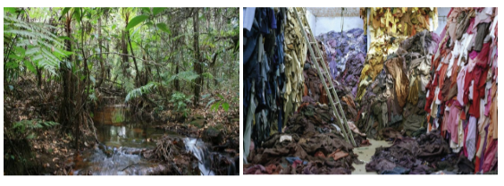
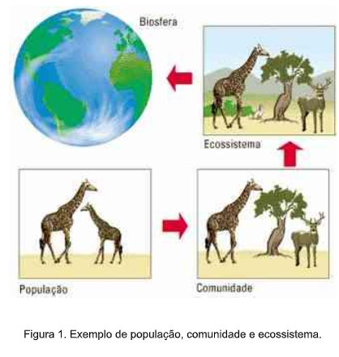

Capítulo 2
Impactos Ambientais na indústria têxtil e do vestuário
CONTEXTUALIZANDO
Qual o significado de Meio Ambiente? Como a indústria têxtil e do vestuário tem relação com o meio ambiente e possíveis impactos ambientais?
(RE)CONSTRUINDO CONHECIMENTOSCaro aluno, neste capítulo, vamos entender o que é meio ambiente e possíveis causas de impactos ambientais relacionados à indústria têxtil e do vestuário
O meio ambiente, comumente chamado apenas de ambiente, envolve todas as coisas vivas e não-vivas ocorrendo na Terra, ou em alguma região dela, que afetam os ecossistemas e a vida dos humanos. O conceito de meio ambiente pode ser identificado por seus componentes: Completo conjunto de unidades ecológicas que funcionam como um sistema natural mesmo com uma massiva intervenção humana e outras espécies do planeta, incluindo toda a vegetação, animais, microorganismos, solo, rochas, atmosfera e fenômenos naturais que podem ocorrer em seus limites. Recursos e fenômenos físicos universais que não possuem um limite claro, como ar, água, e clima, assim como energia, radiação, descarga elétrica, e magnetismo, que não se originam de atividades humanas. Na Conferência das Nações Unidas sobre o Meio Ambiente celebrada em Estocolmo, em 1972, definiu-se o meio ambiente da seguinte forma: “O meio ambiente é o conjunto de componentes físicos, químicos, biológicos e sociais capazes de causar efeitos diretos ou indiretos, em um prazo curto ou longo, sobre os seres vivos e as atividades humanas.” A Política Nacional do Meio Ambiente (PNMA) brasileira, estabelecida pela Lei 6938 de 1981, define meio ambiente como “o conjunto de condições, leis, influências e interações de ordem física, química e biológica, que permite, abriga e rege a vida em todas as suas formas”. O ambiente natural se contrasta com o ambiente construído, que compreende as áreas e componentes que foram fortemente influenciados pelo seres humanos.
Fonte: https://www.ebc.com.br/infantil/voce-sabia/2014/09/o-que-e-meio-ambienteA Ecologia é a ciência que estuda os ecossistemas, ou seja, é o estudo científico da distribuição e abundância dos seres vivos e das interações entre eles. A palavra Ecologia tem origem no grego “oikos", que significa casa, e "logos", estudo.
Organismo: Qualquer ser vivo, exemplo girafa;
População: Conjunto de organismos da mesma espécie;
Comunidade: Diferentes populações de organismos que interagem entre si;
OBS: o conjunto de várias comunidades + fatores abióticos (ar, água, sol, solo, etc) denomina-se ecossistema. Vários ecossistemas dentro dos diversos biomas representam a biosfera.
 Impactos ambientaisOs impactos decorrentes da produção percorrem toda a cadeia produtiva têxtil: desde o plantio do algodão até a confecção da peça, além dos impactos derivados da comercialização. O cultivo do algodão, em virtude da grande quantidade de pesticidas, inseticidas e fertilizantes empregados para a obtenção da fibra, causa contaminação da água, do solo e da fauna local. Além de consumir um volume gigantesco de água nos processos de beneficiamento e acabamento – alvejar e tingir produtos têxteis. Ao longo da cadeia produtiva têxtil, os impactos ambientais envolvem contaminação do solo, consumo de água, de energia, emissões atmosféricas de poluentes e resíduos sólidos.
Fonte: https://portogente.com.br/noticias/meio-ambiente/82179-os-impactos-ambientais-decorrentes-da-cadeia-produtiva-textilPARA SABER MAIS…(Assista aos vídeos)
Resolva as questões a seguir e verifique suas respostas no final do capítulo.
1) O que significa Meio Ambiente?
2) A ecologia é uma ciência que estuda o quê?
3) Diferencie organismo, população e comunidade.
4) Explique como a cadeia produtiva têxtil pode causar impactos no meio ambiente.
1) São os fenômenos naturais, tais como chuvas, ventos, águas, bem como todos os seres vivos envolvidos e interagindo entre si.
2) É a ciência que estuda o meio ambiente e a relação entre os seres vivos.
3) Organismo é qualquer ser vivo, população é o conjunto de seres vivos da mesma espécie, comunidade é o conjunto de populações de diferentes espécies convivendo entre si.
4) A cadeia produtiva têxtil pode causar impactos no cultivo do algodão, o qual se coloca pesticidas que contaminam o solo e a água. O alto consumo de água na indústria produtiva deve ser considerada, bem como no beneficiamento como tintas que causam contaminação se não houver um controle ambiental.